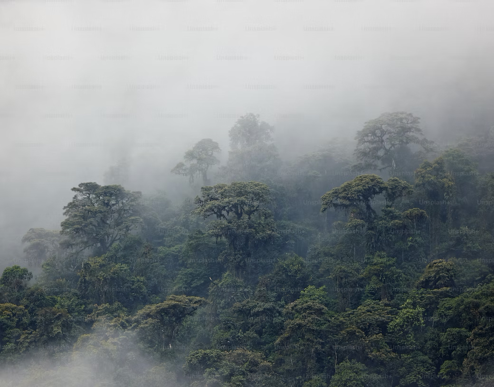
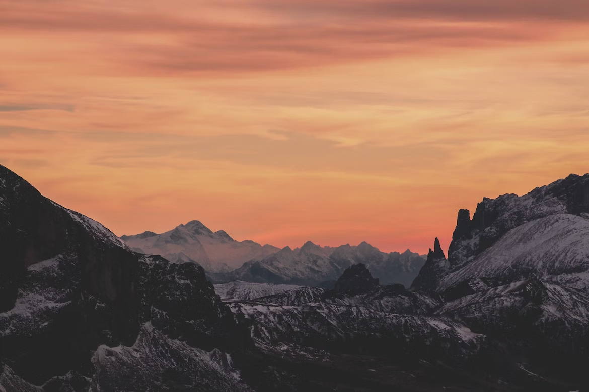
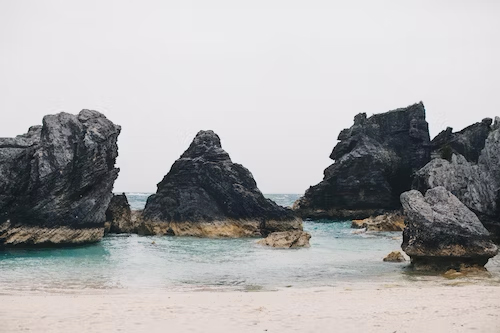
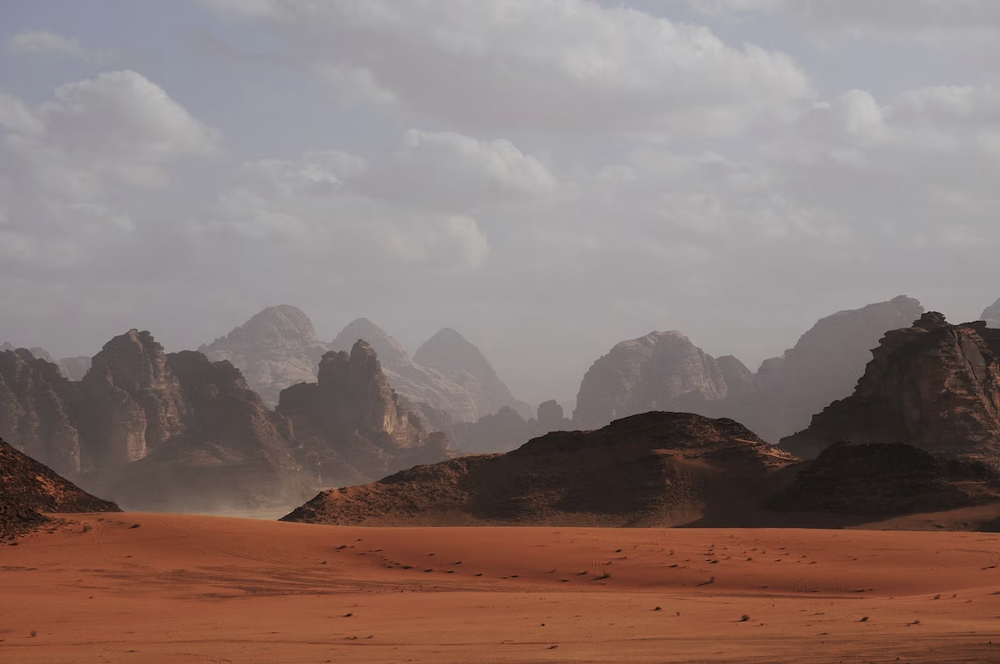

Forests
Forests are the Earth's lungs, playing an invaluable role in mitigating climate change. They are the most biodiverse ecosystems on land, home to more than 80% of the terrestrial species of animals, plants, and insects. Covering about 31% of the global land area, forests also provide shelter, jobs, security, and cultural relevance for many indigenous and local communities around the world. There are various types of forests: tropical rainforests, temperate forests, and boreal forests being the primary ones. Each of these forest types has its unique flora and fauna. They act as carbon sinks, absorbing roughly 2 billion tonnes of carbon dioxide every year.
Mountains
Mountains are majestic elevations that rise abruptly from the surrounding environment and have peaks narrower than their base. They are formed through tectonic forces or volcanism. Covering about 22% of the Earth's land surface, mountains play a critical role in providing freshwater to billions of people, acting as a biodiversity hub and offering a place for tourism and spiritual contemplation. They are also the sources of most of the rivers around the world. Mountain ecosystems are sensitive to climate change, and global warming could bring some substantial adverse effects on them.
Oceans
Oceans are vast bodies of saltwater that cover more than 70% of the Earth's surface. They play a fundamental role in regulating the Earth's climate and are home to numerous species of marine flora and fauna. From the shallows of the coral reefs to the abyssal depths, oceans are a reservoir of immense biodiversity. They also act as the world's largest carbon sink, playing a pivotal role in climate regulation. Oceans also support the livelihood of millions of people, from fishing to tourism, and hold a deep cultural significance for many coastal communities.
Deserts
Deserts are natural landscapes that receive very little annual rainfall, leading to harsh living conditions. They can be hot deserts, like the Sahara or the Arabian desert, or cold deserts like the Gobi or the Great Basin. While they may seem lifeless at first glance, deserts are home to a myriad of adapted plants and animals. The flora and fauna here have unique adaptations that allow them to survive the extreme temperatures and conditions. Interestingly, the largest solar power plant in the world is located in a desert, harnessing the sun's energy.